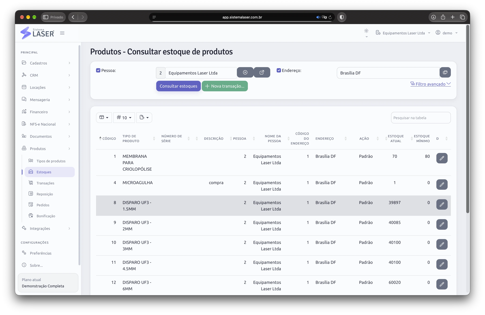
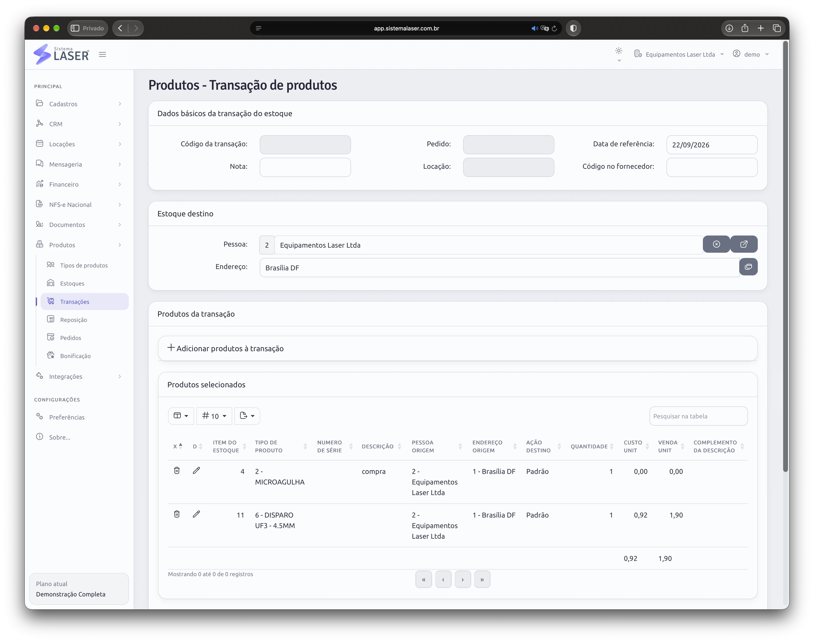
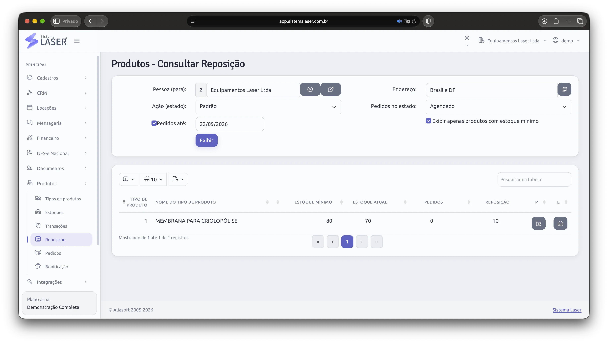

Cadastrar
Defina o produto, a unidade e as regras de controle.
Controle produtos comuns ou identificados por número de série, organize múltiplas localidades e conecte cada movimentação às compras, vendas, clientes e locações.
Consulte os produtos disponíveis, o saldo atual e o estoque mínimo definido para cada operação.
Crie estoques em diferentes localidades para separar depósitos, filiais, estoques principais e pontos de consumo diário. As transferências registram a saída da origem e a entrada no destino, preservando o histórico da movimentação.

O histórico permite entender o caminho percorrido por cada item e a operação que originou a mudança de estoque.
Defina o produto, a unidade e as regras de controle.
Registre a chegada e o estoque responsável pela entrada.
Transfira unidades entre localidades com rastreabilidade.
Vincule o produto ao cliente e à locação correspondente.
Registre eventuais retornos sem perder o histórico anterior.
Analise a necessidade e organize novos pedidos de compra.
Quando cada unidade importa, o número de série permite acompanhar sua entrada, movimentações, venda e eventual devolução.
Esse nível de rastreabilidade atende operações sensíveis, como estoques de próteses humanas — incluindo próteses mamárias — em que é necessário reconstruir o ciclo de vida de uma unidade específica. Para peças, consumíveis e outros itens simples, o sistema também oferece o controle comum por quantidade.
Acompanhe cada unidade identificável do recebimento ao destino final.
Controle peças, consumíveis e outras unidades simples por quantidade.
Adicione produtos à operação, informe origem, destino, quantidade, custo e valor de venda sem criar controles paralelos.
As transações atualizam o estoque automaticamente e preservam o vínculo com o cliente e a locação. Depois, a equipe consegue consultar exatamente quais produtos foram direcionados, consumidos ou vendidos em cada atendimento.

Compare estoque mínimo, saldo atual e pedidos já programados para calcular a necessidade de reposição de cada produto.
A análise transforma a conferência do estoque em uma lista objetiva de compra. A funcionalidade de Pedidos organiza o processo de aquisição e acompanha os pedidos de produtos usados para recompor os estoques.

Estoque, aquisição e venda compartilham a mesma base de produtos e movimentações.
Organize os pedidos de produtos destinados à reposição e acompanhe o processo de recomposição do estoque.
Controle regras de bonificação e comissões de vendas por produto dentro da mesma operação comercial.
Na demonstração, aplicamos estoques, séries, transações, reposição e pedidos ao fluxo real da sua empresa.